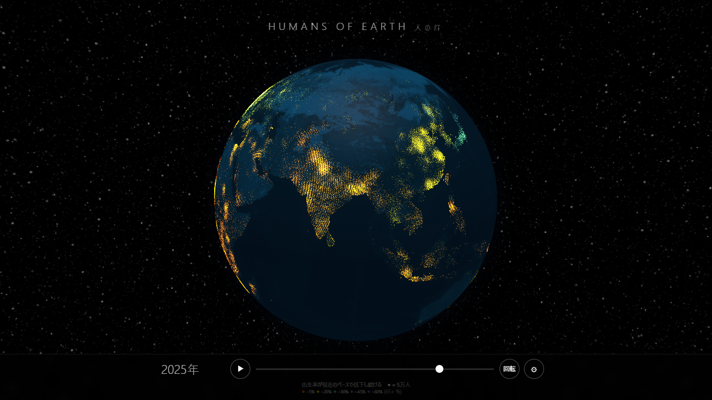

日本や韓国の出生率が極端に低くなっているというニュースをよく目にする。低いと実際どうなるのだろう。どんな未来が待ってるのだろう、と。
数字で見ればいくらでもデータはある。でも数字を眺めても「実感」がない。人が減っていく様子をビジュアライズしたかった。
まずどんなインフォグラフィックが世にあるか調べた。国の面積が人口に応じて変化するカルトグラムとか。ただ、求めているものではない気がした。その手掛かりに、宇宙から見た夜の街の光が使えそうな気がした。
作った。
3D地球儀の上に、人がいる場所だけ光る。スライダーを動かすと紀元前1万年から2100年まで、光が変化する。
暗い地球の上に、ドットを灯す
NASAの夜景画像から都市の光ピクセルを抽出して、それぞれを「人口ドット」として扱う。1ドットが約5万人。明るい都市ほど重いドットになる。
ベースは光を全部消した暗い地球。Blue Marbleの昼画像を夜景化して、NASAの夜景の色調に合わせたティール色の大陸シルエットだけが浮かぶ。その上にドットを加算合成する。光の色や明るさを自由にいじれる。
古代の火、近代の電気
スライダーを紀元前1万年に戻すと、地球はほぼ真っ暗になる。そこからゆっくり進めると、メソポタミア、ナイル、黄河のあたりに赤い火が灯る。文明の中心が光る。
この赤は意図的に「火の光」にしてある。電気がない時代の人の灯は焚火の色だから。産業革命（1800年頃）を境に、赤い火がオレンジの電気光に徐々に変わっていく。
古代都市のデータはReba et al. (2016) の歴史都市データベースを使った。テーベ、バビロン、メンフィスが紀元前から光る。1,577都市分の緯度経度と人口が、紀元前3700年から揃っている。
出生率の崩壊
3つのシナリオを切り替えられる。
- Linear — 出生率が今の下降ペースで落ち続ける（床はゼロ）
- Stable — 出生率が2023年の値で固定される
- Soft — 下降が緩やかになり、0.8で下げ止まる
Linearは「悲観ていうな、嘘を正しくしてるのだ」というスタンスで作った。出生率が回復したケースなんて歴史上ない。回復する前提を置かないだけだ。
UN中位推計は「出生率はいずれ置換水準（2.1）に戻る」と仮定している。このプロジェクトはその仮定を外す。外したらどうなるかを見る。
中国のTFR（合計特殊出生率）の下降速度は年-0.128。日本は-0.028。4.5倍速い。Linearシナリオで2100年を見ると、中国は日本より暗くなる。直感に反するが、データがそう言っている。
アフリカも下がっている
Stableシナリオに切り替えると、アフリカ大陸が明るく輝く。ナイジェリアのTFRは4.48で、出生率が固定されれば人口は爆発する。
ところがLinearに戻すと、アフリカも暗くなる。ナイジェリアのTFR下降速度は年-0.125。高い位置からの下降だが、確実に下がっている。これは意外だった。
先コロンブス期のアメリカ
西暦1000年あたりにスライダーを合わせると、メキシコが明るく光る。紀元前1000年のメキシコに600万人。オルメカ文明の時代だ。ブラジルは紀元1000年に1,134万人。都市を作らなかっただけで、アマゾン流域に大量の人が住んでいた。
紀元前のアメリカにこれだけ人がいるイメージはなかった。
ただし、この数字はHYDE 3.2モデルの推計値で、学界で最も議論の多いトピックの一つ。低め推計（Kroeber 1939）は全アメリカ大陸で800〜1500万人としている。方法論ドキュメントに詳しく書いた。
日本は最初から青白い
年齢構成による色変え機能がある。若い国はオレンジ（暖色）、高齢化した国は青白く光る。
日本は2025年の時点で既に青白い。65歳以上人口が29.4%。世界で最も高齢化した国の光は、最初から冷たい色をしている。
技術
- 描画: Globe.GL + THREE.Points（約4万ドット、additive blending + glow shader）
- 人口モデル: TFR/置換水準(2.1)ベースの出生率計算 + 3層コホートモデル
- データ: OWID（人口・TFR・LE・IM）、World Bank（年齢構成）、NASA（夜景・Blue Marble）、Reba et al.（歴史都市）
- ホスティング: Cloudflare Pages
- ソースコード: GitHub
- 方法論: 日本語 / English
これから
移民フローの可視化を制作中。人口が減る国から増える国へ、ドットが光の弧を描いて移動するアニメーション。重力モデル（GDP・距離・言語）で行き先を割り振る。
出生と死亡をドットの色で分けて「どこで命が始まり、どこで終わるか」を見せるレイヤーも考えている。
スライダーを動かして、自分の国の光がどう変わるか見てみてほしい。